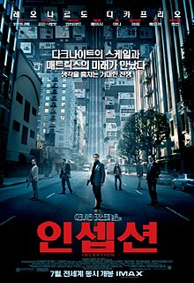

자기소개
- 이름 : 가비- 사는 곳 : 경기 광주시
- 소개말 : 안녕하세요, 가비입니다! 만나서 반갑습니다!
인생영화 Top 5
| 순위 | 제목 | 포스터 | 줄거리 | 바로가기 |
| 1 | 라라랜드 |

|
황홀한 사랑, 순수한 희망, 격렬한 열정… 이 곳에서 모든 감정이 폭발한다! 꿈을 꾸는 사람들을 위한 별들의 도시 ‘라라랜드’. 재즈 피아니스트 ‘세바스찬’(라이언 고슬링)과 배우 지망생 ‘미아’(엠마 스톤), 인생에서 가장 빛나는 순간 만난 두 사람은 미완성인 서로의 무대를 만들어가기 시작한다. |
네이버 영화 바로가기 |
| 2 | 굿 윌 헌팅 |
“윌, 네 잘못이 아니야.” 수학, 법학, 역사학 등 모든 분야에 재능이 있는 ‘윌’(맷 데이먼)은 천재적인 두뇌를 가지고 있지만 어린 시절 받은 상처로 인해 세상에 마음을 열지 못하는 불우한 반항아. 절친인 ‘처키’(벤 애플렉)와 어울리던 ‘윌’의 재능을 알아본 MIT 수학과 ‘램보’ 교수는 대학 동기인 심리학 교수 ‘숀’(로빈 윌리엄스)에게 그를 부탁하게 되고 거칠기만 하던 ‘윌’은 ‘숀’과 함께 시간을 보낼수록 상처를 위로 받으며 조금씩 변화하기 시작하는데… |
네이버 영화 바로가기 | |
| 3 | 씽 |
영원히 기억하고 싶은 황홀한 모험이 시작된다! 뮤지션을 꿈꾸는 소년 미구엘은 전설적인 가수 에르네스토의 기타에 손을 댔다 ‘죽은 자들의 세상’에 들어가게 된다. 그리고 그곳에서 만난 의문의 사나이 헥터와 함께 상상조차 못했던 모험을 시작하게 되는데… 과연 ‘죽은 자들의 세상’에 숨겨진 비밀은? 그리고 미구엘은 무사히 현실로 돌아올 수 있을까? |
네이버 영화 바로가기 | |
| 4 | 인셉션 |  |
타인의 꿈에 들어가 생각을 훔치는 특수 보안요원 코브. 그를 이용해 라이벌 기업의 정보를 빼내고자 하는 사이토는 코브에게 생각을 훔치는 것이 아닌, 생각을 심는 ‘인셉션’ 작전을 제안한다. 성공 조건으로 국제적인 수배자가 되어있는 코브의 신분을 바꿔주겠다는 거부할 수 없는 제안을 하고, 사랑하는 아이들에게 돌아가기 위해 그 제안을 받아들인다. 최강의 팀을 구성, 표적인 피셔에게 접근해서 ‘인셉션’ 작전을 실행하지만 예기치 못한 사건들과 마주하게 되는데… |
네이버 영화 바로가기 |
| 5 | 타짜 |

|
가구공장에서 일하며 남루한 삶을 사는 고니는 대학보다 가난을 벗어나게 해줄 돈이 우선인 열혈 천방지축 청년! 어느 날 고니는, 가구공장 한 켠에서 박무석 일행이 벌이는 화투판에 끼게 된다. 스무장의 화투로 벌이는 '섯다' 한 판! 하지만 고니는 그 판에서 삼년 동안 모아두었던 돈 전부를 날리고 만다. 그것이 전문도박꾼 타짜들이 짜고 친 판이었단 사실을 뒤늦게 안 고니는 박무석 일행을 찾아 나서고, 도박으로 시비가 붙은 한 창고에서 우연인 듯 필연처럼 전설의 타짜 평경장을 만난다. 그리고 잃었던 돈의 다섯 배를 따면 화투를 그만두겠단 약속을 하고, 그와 함께 본격적인 꽃싸움에 몸을 던지기 위한 동행길에 오른다. |
네이버 영화 바로가기 |
방명록
성함 :
본인의 취향 영화는?
인셉션
타짜
굿 윌 헌팅
라라랜드
코코